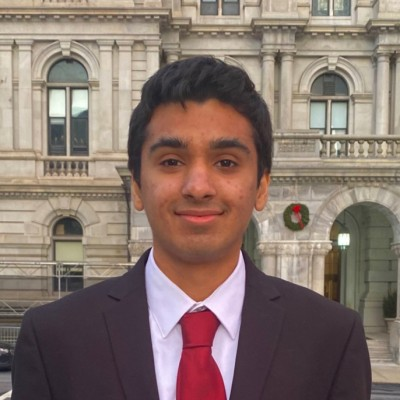

About Me

I'm a graduate student at Carnegie Mellon University pursuing a Master of Science in Artificial Intelligence Engineering-Mechanical Engineering with a concentration in Robotics & Controls. With a strong foundation in mechanical engineering and a passion for AI, I focus on solving complex problems at the intersection of perception, autonomy, and controls.
I previously completed a Bachelor of Science in Mechanical Engineering at Rensselaer Polytechnic Institute, where I developed a broad skill set in engineering principles, design, and analysis. My academic and research experiences have equipped me with expertise in computer vision, machine learning, robotics, and engineering design.
Expertise & Interests
- Artificial Intelligence: Computer vision, machine learning, deep learning, Vision Foundation models, neural networks, AI Agents
- Robotics & Controls: Autonomous systems, Model-Predictive Control, robot kinematics, Embodied AI Safety
- Engineering: Computer-Aided Design, structural analysis, thermodynamic systems, Probabilistic Risk Assessment (PRA), Mechanical Design
- Technical Skills: Python, MATLAB, C++, Solidworks, TensorFlow, PyTorch, Kafka, Apache Spark, Cloud Computing, Scalable Design
Beyond Academics
I'm passionate about engineering education and leadership. I served as a Senior Engineering Ambassador, developing technical curricula for K-12 students, including leading a project related to semiconductor industry educational modules. and as Director of Sponsorship for HackRPI, raising $100K+ in sponsorship to support 500+ participants in the annual hackathon.
In my free time you can find me doing something outdoors (hiking, playing tennis, biking, etc.). I also love to collect coins and have a growing collection focusing on the US quarter series!
Email: sanaytralshawala@gmail.com
LinkedIn: linkedin.com/in/sanayt/